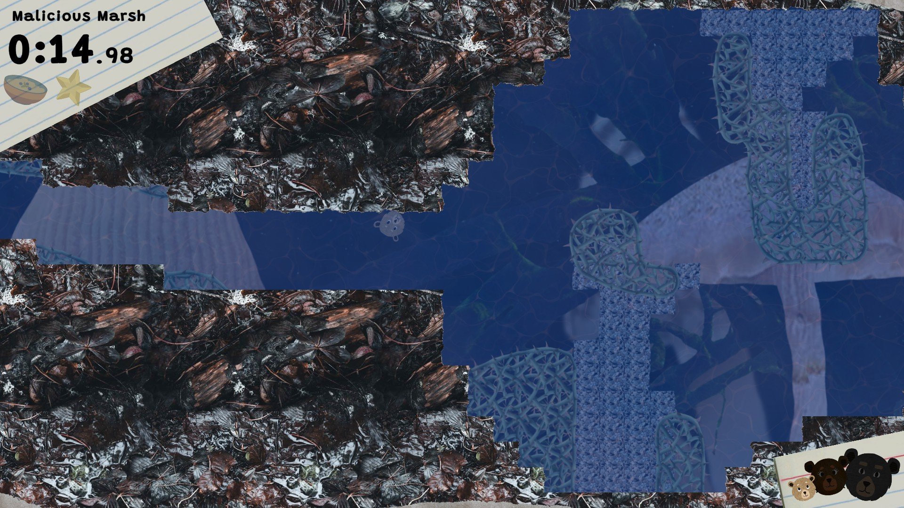
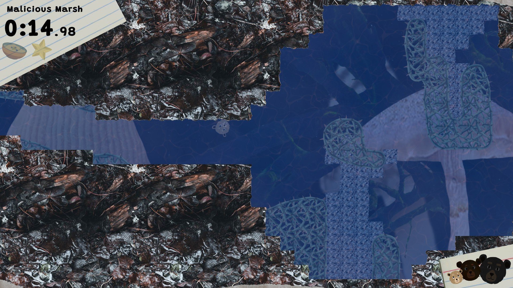
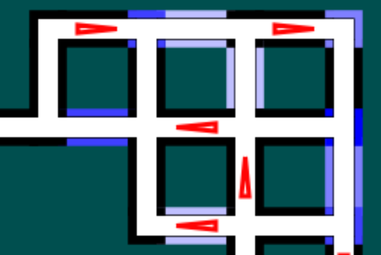

Programming and Game Design Portfolio
Email: cameronradodd@gmail.com
BlueSky LinkedIn Itch.io GitHub
Email: cameronradodd@gmail.com
BlueSky LinkedIn Itch.io GitHub
About Me
Hi there! I'm Cameron (he/they), independent game developer and enjoyer of many things.
I've been working on games for many years, and I love thinking about the implementation and design of game systems and mechanics.
Creating things that people will enjoy is my passion, and I love collaborating with others to make that happen.
I graduated from the UC Santa Cruz Computer Science: Game Design program in 2024. Over time, I have gained experience with C#/Unity, Javascript/Typescript, basic HTML/CSS, C++, and Python, as well as Git, Phaser, Godot, and a few other languages and tools.
I graduated from the UC Santa Cruz Computer Science: Game Design program in 2024. Over time, I have gained experience with C#/Unity, Javascript/Typescript, basic HTML/CSS, C++, and Python, as well as Git, Phaser, Godot, and a few other languages and tools.
Projects
 

Three Bulky Bears
Three Bulky Bears is a 2D level-based platformer created in Unity. Play as the 3 bears, who have been kicked out of their home by the evil witch Rolldilocks. At the press of a button, you can switch between the 3 bears, each of which control differently and has their own unique abilities! The game contains 50 levels across 5 worlds, each with their own unique mechanics and challenges.
Three Bulky Bears started as my capstone project for the UCSC Game Design program. As the most experienced developer on the team, and the person who pitched the project, I took a central role, acting as producer, lead programmer, lead designer, and heading up marketing and launch operations.
Three Bulky Bears released on March 31, 2025, and is available on Steam here!
Three Bulky Bears is a 2D level-based platformer created in Unity. Play as the 3 bears, who have been kicked out of their home by the evil witch Rolldilocks. At the press of a button, you can switch between the 3 bears, each of which control differently and has their own unique abilities! The game contains 50 levels across 5 worlds, each with their own unique mechanics and challenges.
Three Bulky Bears started as my capstone project for the UCSC Game Design program. As the most experienced developer on the team, and the person who pitched the project, I took a central role, acting as producer, lead programmer, lead designer, and heading up marketing and launch operations.
Three Bulky Bears released on March 31, 2025, and is available on Steam here!

WanderPath
Wanderpath puzzles are my own creation, a brand new form of line puzzle.
Solving a Wanderpath puzzle requires drawing a line from one endpoint to another, while crossing back over the line when necessary in order to cross certain edges the required number of times. I designed the rules of the puzzle, then created a puzzle generator and game with the Phaser javascript library, and an HTML page to host it.
Wanderpath puzzles are my own creation, a brand new form of line puzzle.
Solving a Wanderpath puzzle requires drawing a line from one endpoint to another, while crossing back over the line when necessary in order to cross certain edges the required number of times. I designed the rules of the puzzle, then created a puzzle generator and game with the Phaser javascript library, and an HTML page to host it.

Bitwise Battle
Bitwise Battle is a wholly original board game I designed and prototyped.
This game pits 2-3 players against each other as they manipulate a string of digital binary using real 'bitwise operations'. Reviews include "Even as an artist, I can get into this!" and "Makes me WANT to do my homework!" Bitwise Battle is not currently available online, but it will be in the future!
Bitwise Battle is a wholly original board game I designed and prototyped.
This game pits 2-3 players against each other as they manipulate a string of digital binary using real 'bitwise operations'. Reviews include "Even as an artist, I can get into this!" and "Makes me WANT to do my homework!" Bitwise Battle is not currently available online, but it will be in the future!

You're Fired!
I teamed up with a few other members of the UC Santa Cruz Independent Gamedev Coalition to produce You're Fired! for GMTK Game Jam 2023. I helped implement the dynamic camera, particle effects, menus, and the initial controls, as well as miscellaneous bug fixing. You're Fired! came in the top 13% of 6,986 submissions in the Enjoyment, Creativity, and Overall rankings.
I teamed up with a few other members of the UC Santa Cruz Independent Gamedev Coalition to produce You're Fired! for GMTK Game Jam 2023. I helped implement the dynamic camera, particle effects, menus, and the initial controls, as well as miscellaneous bug fixing. You're Fired! came in the top 13% of 6,986 submissions in the Enjoyment, Creativity, and Overall rankings.

The Adventures of Plasmabeard
The Adventures of Plasmabeard is a short and fairly simple choose-your-own-adventure story I wrote in Twine for an intro game production class.
The Adventures of Plasmabeard is a short and fairly simple choose-your-own-adventure story I wrote in Twine for an intro game production class.


Gimme A Hand!
I was the lead programmer for Gimme A Hand! as part of a team of 3 for Foundations of Video Game Design. We used the free edition of the Construct game engine, which is very limited, and I'm very proud of what we managed to produce despite the limitations.
I was the lead programmer for Gimme A Hand! as part of a team of 3 for Foundations of Video Game Design. We used the free edition of the Construct game engine, which is very limited, and I'm very proud of what we managed to produce despite the limitations.

Man With A Movie Camera
Man With A Movie Camera is a short collection of minigames based on the Russian 1929 silent documentary film of the same name. I was solo programmer for the project, working with one artist.
The three minigames are top down ambulance-driving, a mouse based phone line operator simulator (I'm particularly proud of this one), and a shooting gallery game.
Man With A Movie Camera is a short collection of minigames based on the Russian 1929 silent documentary film of the same name. I was solo programmer for the project, working with one artist.
The three minigames are top down ambulance-driving, a mouse based phone line operator simulator (I'm particularly proud of this one), and a shooting gallery game.

Early Warning
During Fall quarter of 2023, I participated in an independent study program, working with a PhD student on an NSF-funded edutainment project. The project was a collection of minigames, intended to teach people practical skills and knowledge to help them prepare for wildfires.
I was the sole programmer in my team of 3, alongside a writer and an artist. Over the course of the quarter, I implemented a flexible, modular system for data-driven cutscenes. This required working closely with a team and implementing complex systems under tight deadlines. The version of the project I worked on is available here.
During Fall quarter of 2023, I participated in an independent study program, working with a PhD student on an NSF-funded edutainment project. The project was a collection of minigames, intended to teach people practical skills and knowledge to help them prepare for wildfires.
I was the sole programmer in my team of 3, alongside a writer and an artist. Over the course of the quarter, I implemented a flexible, modular system for data-driven cutscenes. This required working closely with a team and implementing complex systems under tight deadlines. The version of the project I worked on is available here.
Hide and Seek AI
As the final project for a class on Game AI, I created an AI agent for a game of hide and seek in Unity. The AI uses a custom algorithm to make educated guesses about where the player is hiding, then finds a path to them using an implementation of A*. This class got me very interested in the topic of game AI, and although I haven't had a chance to really utilize my knowledge for a game, I'm really looking forward to learning more about it and working with it in the future.
As the final project for a class on Game AI, I created an AI agent for a game of hide and seek in Unity. The AI uses a custom algorithm to make educated guesses about where the player is hiding, then finds a path to them using an implementation of A*. This class got me very interested in the topic of game AI, and although I haven't had a chance to really utilize my knowledge for a game, I'm really looking forward to learning more about it and working with it in the future.